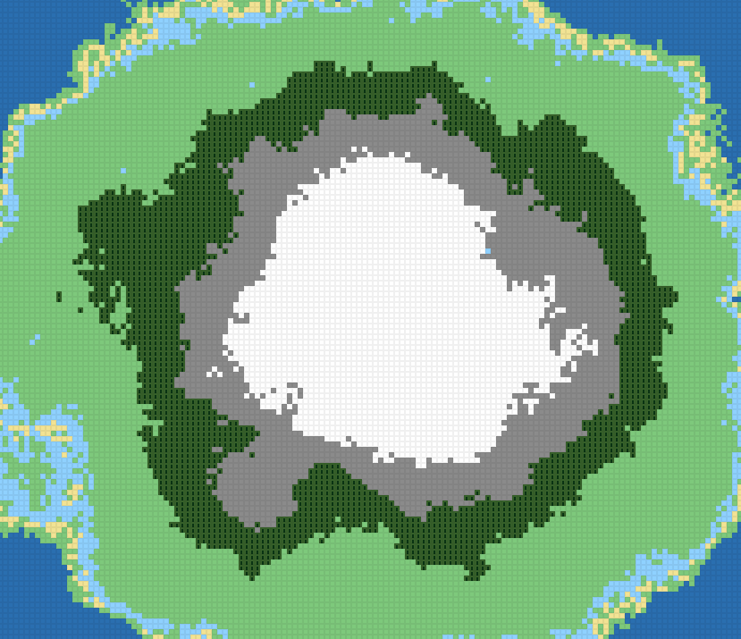
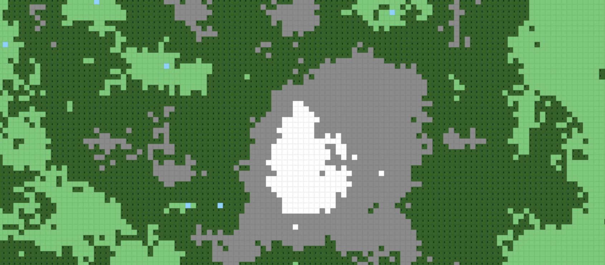
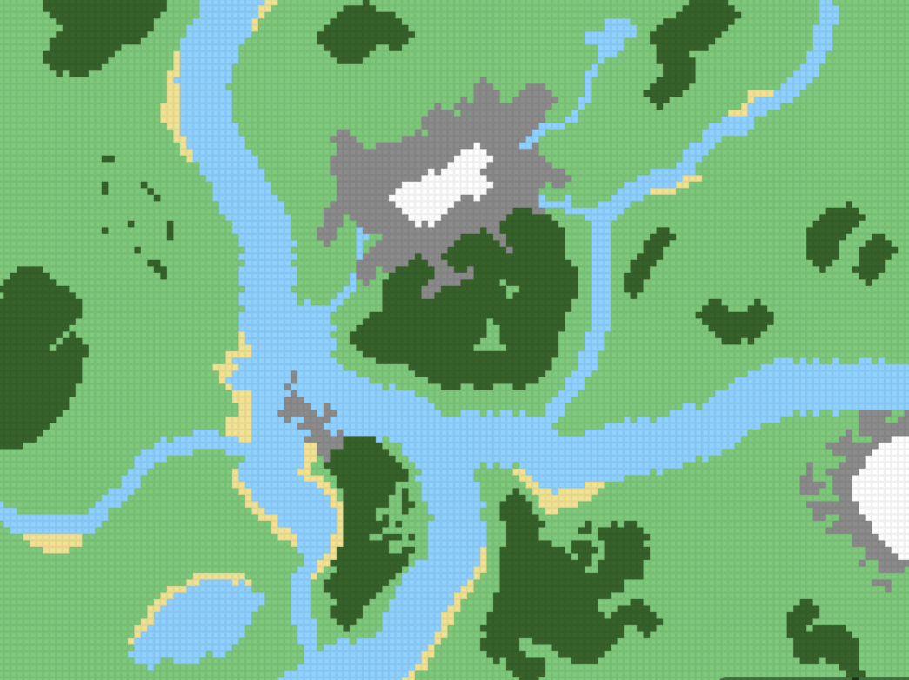

FarmBat
Jugar
Editor de Mapas

Islands
Mapa insular — combates navales

Normal
Clásico, estilo Civ-like

Importar
Cargar JSON y jugar
Changelog
Ver más
v0.1.5
— Carga de mapas y correcta exportacion de estos.
v0.1.4
— Cambio del editor, mejora del menu y cambios visuales de las diferentes interfaces.